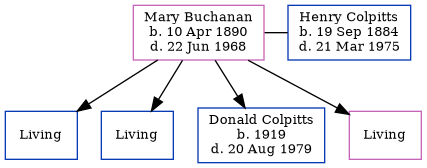

Mary Elizabeth Colpitts (née Buchanan) 1890 - 1968
[ Home ] | [ Calendar ] | [ Surnames Index ] | [ Errors ] | [ Family History ]Mary Buchanan, the wife of Henry Jones Colpitts (the third cousin twice-removed on the father's side of Nigel Horne), was born in Winnipeg, Manitoba, Canada on 10 Apr 18901,2,3,4 and married Henry (with whom she had 4 children: William Hector, Harold Alistair, Donald Ralph and Priscilla Anne, along with 3 surviving children) in Winnipeg on 17 Apr 19126.
During her life, she was living at her birthplace in 18911 and in 19112; and in Toronto, Manitoba c. 19163.
She died on 22 Jun 1968 in Vancouver, British Columbia, Canada5.
Children
- Donald Ralph was born in 1919
Citations
- 1891 Census of Canada Ancestry.com Operations Inc (Marital Status: Single; Relation to Head of House: Daughter)
- 1911 Census of Canada Online publication - Provo, UT, USA: Ancestry.com Operations Inc, 2006. .Original data - Library and Archives Canada. Census of Canada, 1911. Ottawa, Ontario, Canada: Library and Archives Canada, 2007. http://www.collectionscanada.gc.ca/databases/census-19 (Marital Status: Single; Relation to Head of House: Daughter)
- 1916 Canada Census of Manitoba, Saskatchewan, and Alberta Ancestry.com Operations Inc (Marital Status: Married; Relation to Head of House: Wife)
- Web: Canada, Manitoba, Birth Index, 1866-1912 Ancestry.com Operations, Inc.
- British Columbia, Canada, Death Index, 1872–1992 - Findmypast
- Web: Manitoba, Marriage Index, 1879-1931 Ancestry.com Operations, Inc.
Media
British Columbia, Canada, Death Index, 1872–1992 - US/MCV/126823/0842434123865004
Family Tree
Map
Generated by ged2site. Last updated on Jul 3, 2024
Known Issues
No records of living with anyone
Census information missing between 1891 Census of Canada and 1911 Census of Canada